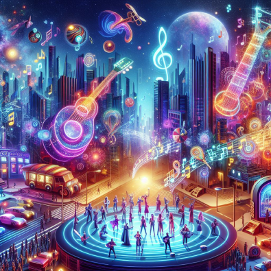

"The Time Machine": The Soundtrack of Our Immersive Television
Dive into the avant-garde electronic universe with "The Time Machine," the opening track of the album "Electronica 1: The Time Machine" by Jean-Michel Jarre. Released in 2015, it provides a perfect sonic introduction to our concept of futuristic immersive television.
A Visionary Collaboration
This track, born from a collaboration between Jarre and German producer Boys Noize, merges the expertise of the French pioneer of electronic music with the energy of the contemporary scene. This intergenerational encounter echoes our vision of a television that transcends current limits to create an entirely new experience.
Boys Noize
An Immersive Sonic Journey
From the very first notes, "The Time Machine" plunges us into a futuristic universe. Synthetic sounds and hypnotic rhythms create an enveloping atmosphere that foreshadows the total immersion promised by our future television. The listener is transported into a three-dimensional sound space, just as our TV will transform the physical space into a virtual environment.

Image of futuristic music
The Bridge Between Past and Future
Just as our concept of immersive television builds on existing technologies to create a revolutionary experience, "The Time Machine" skillfully blends Jarre's classic sounds with modern elements brought by Boys Noize. This mix perfectly symbolizes the transition from today's television to tomorrow's.

Bridge between past and future
An Invitation to Travel
The 3 minutes and 54 seconds of this track invite the listener to a temporal journey, just as our future television will allow viewers to transport themselves to different environments. The rhythmic and melodic variations of the track evoke the changes in ambiance that our immersive device could offer.
Image of notes evoking a futuristic universe